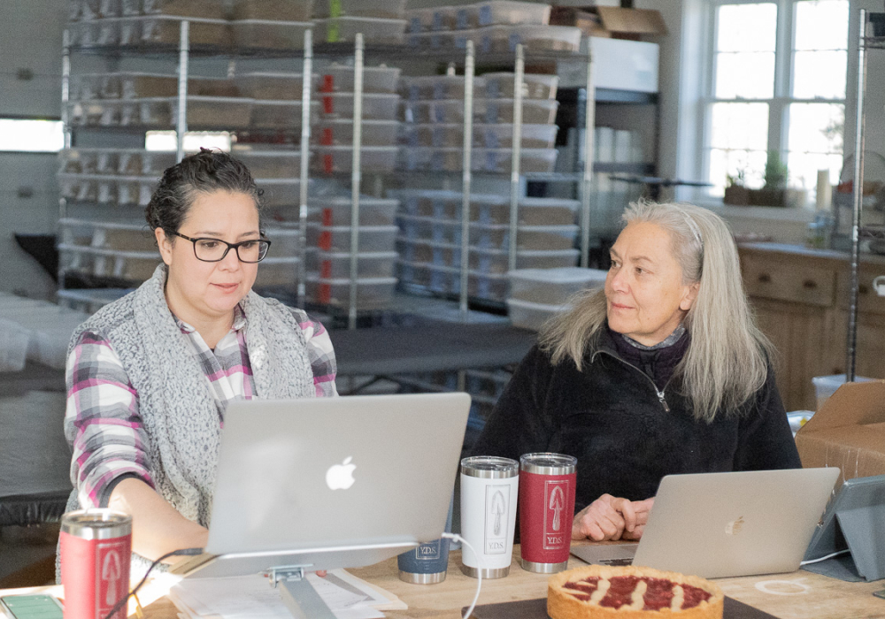
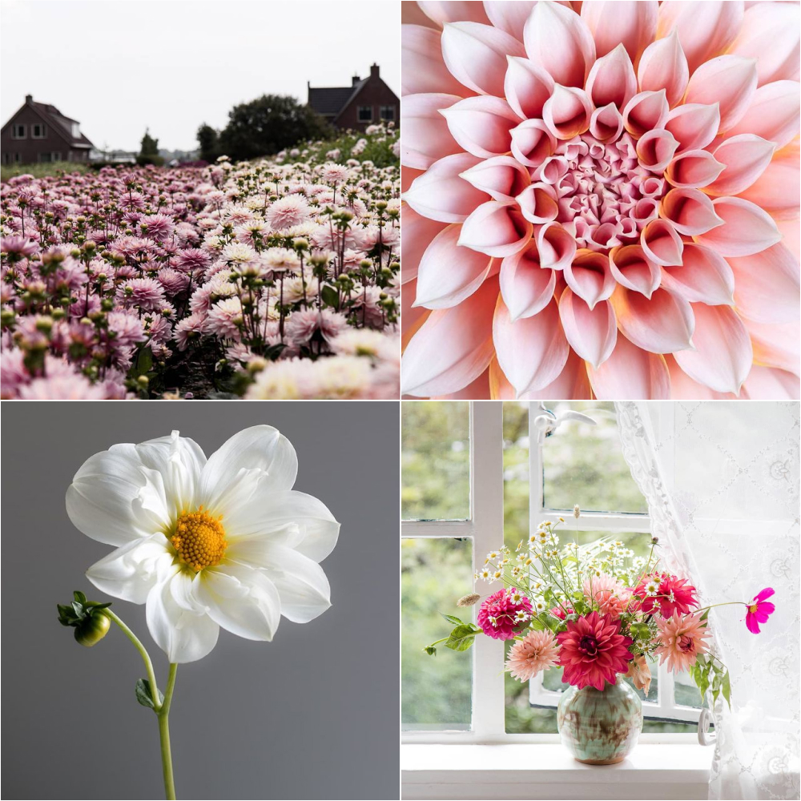
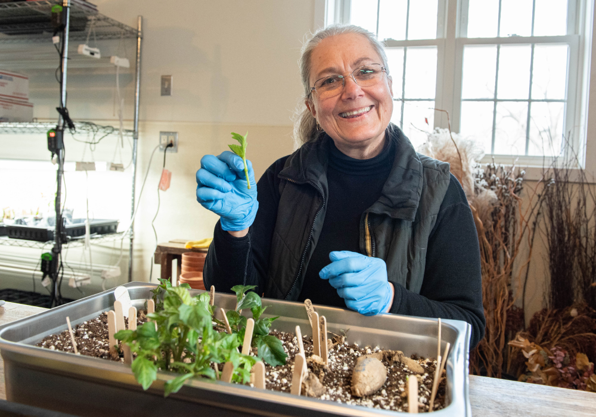
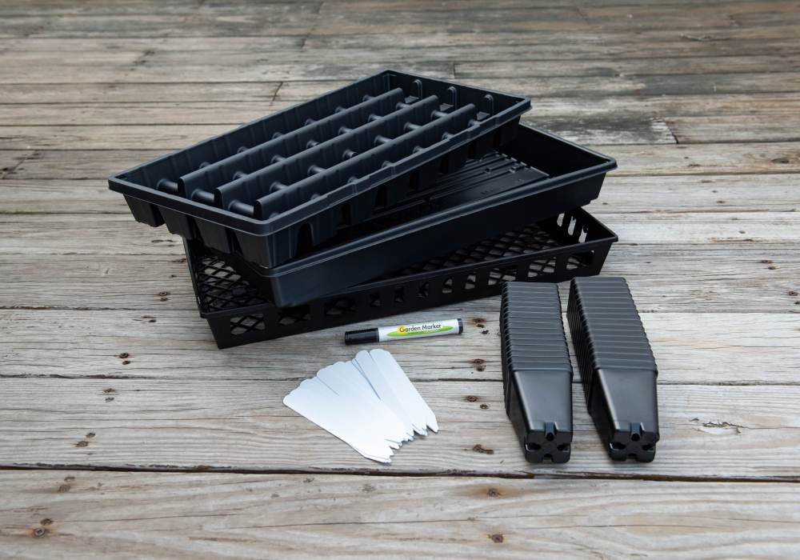
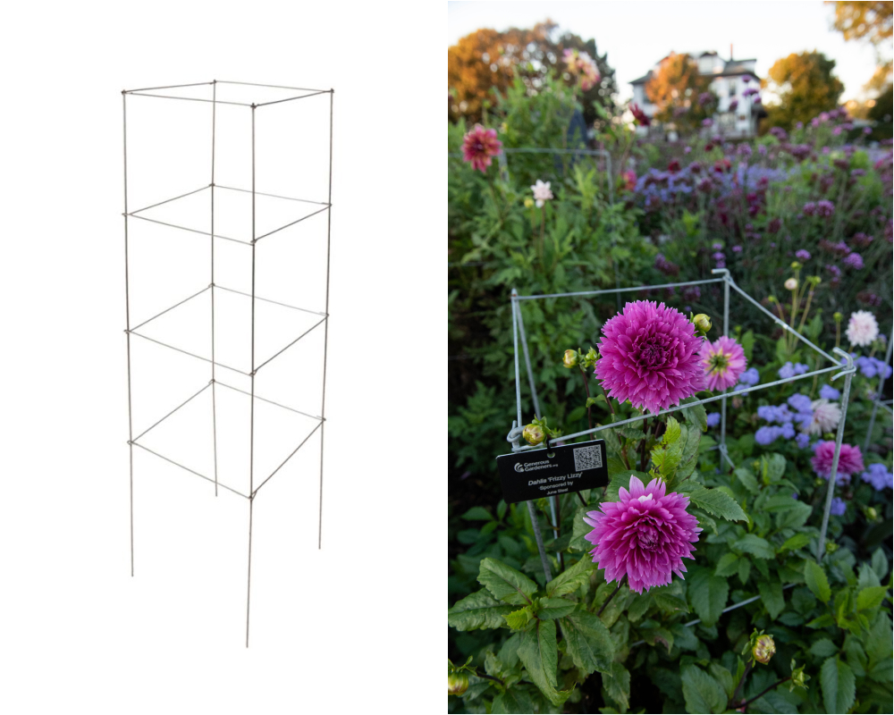
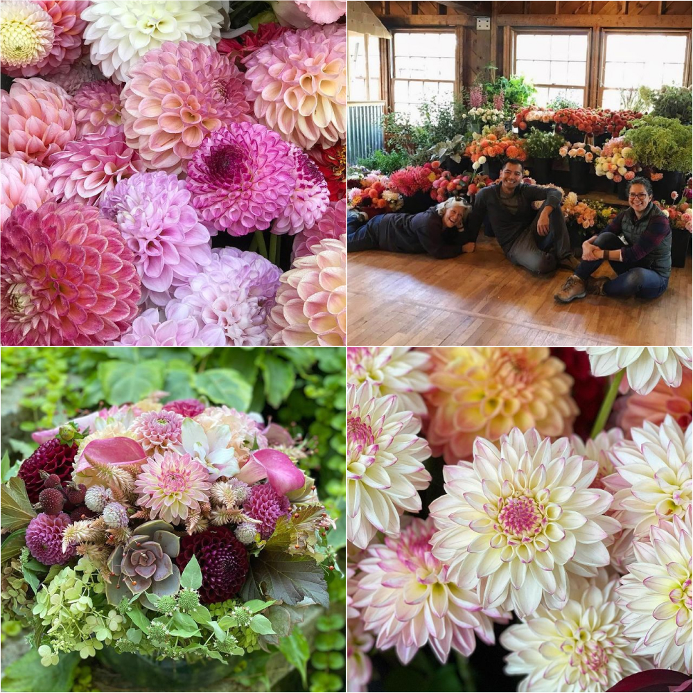
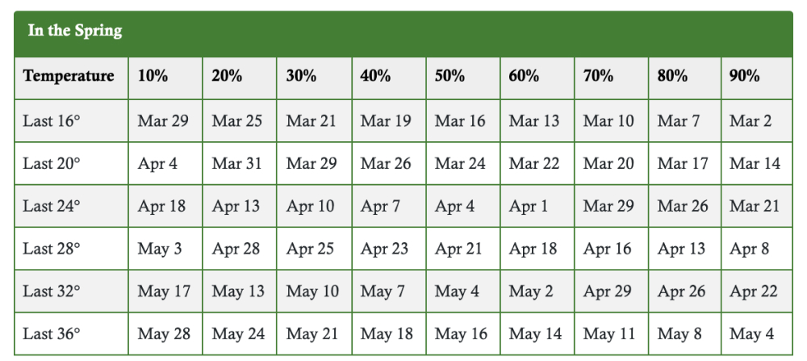
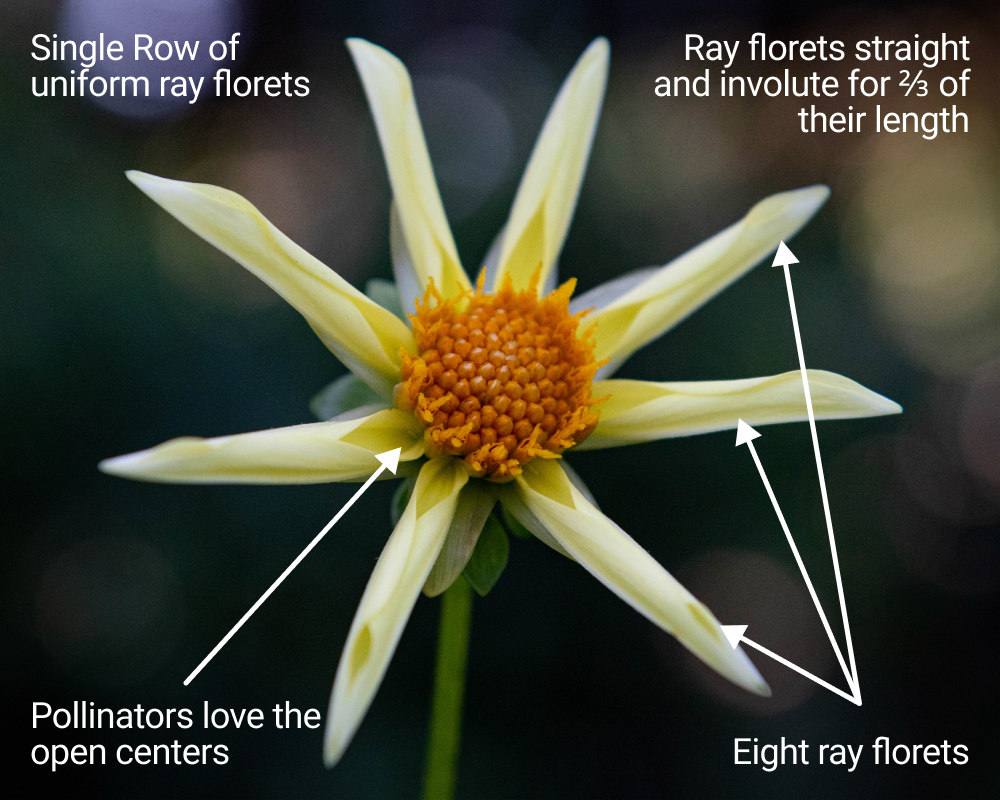

|
Hello dahlia friends!
The jump start to 2022 has been a ton of fun
with already having both in-person and Zoom
meetings. How wonderful is it to meet other
dahlia growers and gardeners from just a few
towns over, and from around the world!
Our February Zoom meeting early this month with
special guest Pauline Mourits from the
Netherlands was a success. We are so glad so
many of you joined us online to meet Pauline and
enjoyed the program. Pauline’s slide show
presentation on Dahlias and Gardens in the
Netherlands with a special focus on photography
was truly spectacular.

Photo by: John Livornese
Having her share her approaches to photography
categories highlighting dahlias in the
landscape, bloom portraits, macro, still life
arrangements and through photography collages
was extremely insightful. Pauline shared she
uses her phone camera at the garden when she’s
not always carrying her Canon (DSLR: Digital
Single Lens Reflex). It’s inspiring to see
Pauline’s photography and learn some tips into
how she takes such beautiful images. We are
extremely grateful to Pauline for taking time to
share her talent with us, and to have a new
friend. Shall we make plans for our trip to the
Netherlands? We look forward to staying in
touch.

Photos by: Pauline Mourits
We are excited to continue to encourage members
to take photos and share images of their dahlias
and gardens. It’s fun to scroll through our
social media feeds as we enjoy seeing what you
capture and share. In addition, we look forward
to running the Y.D.S. annual photography contest
through the club for members again in 2022. So
be sure to keep your cameras near by this
growing season, phone camera or hand held it
doesn’t matter. Just be sure to stay tuned for
more details.

Photo & Tart by: John Livornese
Find the delicious Austrian recipe Pauline bakes
and shares on her website. It’s like a jam treat
and we found it was the perfect use for those
fresh local fruits we picked in the summer and
had in the freezer.
March is right around the corner as we are
getting closer to the first day of Spring on the
20th. We bet everyone is getting excited to
start getting their hands dirty especially with
the few warm days we’ve had in February that had
melted most of the snow, but don’t break out
those gardening gloves yet as New England
weather can surprise us with snow the next day.
We hope to see you on March 6th at Spence Farm
for the next club meeting.
Let us know you’re coming and RSVP through the
Signup Genius:
Y.D.S. Member Meeting (In-Person): Sunday,
March 6th
– Misty & Carol
|
|
Our Next Meeting
Propagating Dahlias From Cuttings and Starting
Dahlias from Seed

Photo by: Misty Florez
There are more ways to propagate dahlias than
simply planting one tuber in the spring and
hoping to harvest several more in the fall.
Would you like to know a fast, easy way to
greatly increase the number of dahlia plants you
have, perhaps even up to ten times more, all in
the same season? That’s the magic of dahlia
cuttings!
Join Y.D.S. Co-Presidents Carol Palmer and Misty
Florez and see how to easily increase your
dahlia stock by taking cuttings. Wondering what
a pot tuber is? We will walk you through the
process from start to finish, and will discuss
and demonstrate starting and taking cuttings
from tubers and from pot tubers.
Interested in growing from seed and growing a
new dahlia variety? It’s just about time to
start your dahlia seeds so don’t miss out on
this great presentation and demonstration. We’ll
have dahlia seeds to share and some samples of
various rooting mediums to take home to give you
the best success with cuttings and seeds. It’s a
meeting not to be missed and we look forward to
seeing you in person this month!
Let us know you’re coming and RSVP through the
Signup Genius:
Y.D.S. Member Meeting (In-Person): Sunday,
March 6th
March 6th Zoom Meeting
-
10:45 - 11:00 - Doors Open: Say hello and get
settled. Meeting will start promptly at 11:00
am
-
11:00 - 11:15 - Welcome; Monthly overview
- 11:15 - 11:30 - Dahlias 101
-
11:30 - 12:45 - Presentation & Demonstration
-
12:45 - 1:00 - Mingle with Members and Bring
your Dahlia Growing Q&A’s
Location: Spence Farm @ Hurld
Wyman Elementary School 41 Wyman Street, Woburn,
MA 01801
Date & Time: Sunday, March 6th,
*11:00 am – 1:00 pm (EST)
*Doors open at 10:45
|
|
Y.D.S. Tuber Shop
We’ve got you covered for your dahlia growing
supply needs:
Send an email to
info@yankeedahliasociety.com. Subject: Growing Supplies
Items can be picked up at the March 6th meeting
or email to coordinate.
Cuttings Supply Kit for $22.00/each

Photo by: Misty Florez
Did you want to try your hand at cuttings and
would like to bring home some supplies but
didn’t want to buy in bulk? Order this week and
we’ll have a kit for you to pick up at the March
6th meeting so you can bring home and be ready
to start cuttings on your own.
- (1) 1020 Tray (Heavy Duty) - No Holes
- (1) 1020 Daisy Tray
-
(1) 2.5" Deep Black Form Tray - Square Pots:
32/tray
- (32) 2.5" Deep Black Form Pots - Square
- (40) 6" Plant Labels
- (1) Garden Marker
46” 4-Panel Galvanized Support Tower

Photo by: Misty Florez
Looking to support your dahlias this year with
the 4 panel 46” galvanized steel towers that
Generous Gardeners uses in their Gloucester
gardens on Stacy Boulevard? Easy to pop into the
ground in the summer and support those dahlia
plants and packs flat for storage in the fall
and easy to put away.
Options:
-
46" 4 Panel Galvanized Support Tower
$7.00/ea
-
46" 4 Panel Galvanized Support Tower
$65.00/10 pack
Y.D.S. Tuber Shop

Online Tuber Store is open to YDS Members. We
have lots of great varieties for cuttings and
for show. Get them before they're gone!
Anyone needing help with purchasing tubers
online can call or text for assistance. We are
happy to help.
Misty’s Cell 732-674-2087
Carol’s Cell 508-826-9214
Pickup or Shipping
Orders can be picked up during our March 6th or
May 1st in person meetings at Spence Farm in
Woburn, MA. Let us know when you would like to
pick up via SignUp Genius and we’ll make sure to
have your order ready.
We can also ship your order to you in the spring
when the weather warms and allows for safe
delivery. Shipping fees will be calculated and
billed separately. Simply sign up for this
option on SignUp Genius.
Pickup at Meeting or Shipping SignUp
|
|
Member Spotlight

Chau Ho
Photography by: Chau Ho
 Chau Ho on Facebook
Chau Ho on Facebook
 @ho.megrown_gardens on instagram
@ho.megrown_gardens on instagram
My garden was named Ho.meGrown Gardens because
Ho is me and everything I use for arrangements
is all grown in my home gardens. The property
spans for almost an acre, but the dahlias are
only grown in 2 raised beds: 4’ wide and 36’
long. I started growing dahlias in 2017. In my
first year, all the dahlia plants were grown in
pots. In 2021, I grew about 150 different
varieties of dahlias with about 288 plants in
the ground and many more as pot tubers. In 2022,
I’m hoping to drastically reduce the number of
varieties.
I’m a plant enthusiast and grow lots of plant
species from all over including a mix of
perennial and annual cut and container flowers,
agave and aloes, cannas and brugmansia,
carnivorous and aquatic plants, succulents like
sedum, sempervivum, echeveria, and rhipsalis,
and fruit trees like persimmons, figs, and
pawpaws. Through gardening, I’m able to connect
with friends and family. As a designer with a
love for biology, gardening is a creative outlet
that combines these two passions. While on a
family trip in San Fran, my brother was
fascinated with a peculiar flower and asked me
to ID. Turns out, it was a dahlia named ‘Wheels’
and that’s how it all started; I still grow
descendants of that first ‘Wheels.’ Like
gardening, one of the most amazing aspects of
growing dahlias is the connections formed and
developed with friends, family, and
acquaintances. One particularly memorable moment
involves my sharing the dahlia ‘Westerton Ella
Grace’ to help reconnect a mother with her
deceased daughter named Ella Grace.
I’m particularly drawn to Miniature Balls, but
also enjoy Stellars, Anemones, and Novelty Fully
Doubles. I like unique and unusual color blends,
especially if the flower petals have contrasting
colors on opposite sides. The hybridization and
introduction of new varieties and color
combinations is always exciting to try and
experiment; and maximizing the number of
seed-grown dahlia plants in a limited growing
area. Dahlias have little to no resistance to
the many plant pests and diseases, so battling
these challenges is ongoing. I’m not a fan of
dealing with pests like voles, rabbits, and
groundhogs.
Chau’s favorite top 1-10 dahlias
- Valley Porcupine
- Chimacum Davi
- Ketchup & Mustard
- Salish Twilight Girl
- Seabeck's Hilda
- Gitts Crazy
- Kelgai Ann
- Badger Twinkle
- Coralie
- Ferncliff Thunder
Chau, do you have a few dahlia tips you’d
like to share with everyone?
Slow-release fertilizer, like Osmocote Plus, is
a great boost for your plant throughout the
entire growing season.
Use 0-0-60 fertilizer for better tuber
production.
Use hydrogen peroxide to moisten and disinfect
your storage media if it becomes too dry.
|
|
Dahlia Tip
When is it safe to plant?

Have you been wondering when to plant your
dahlias? Dahlias need to be in the ground for at
least 120 days in order for the tubers to have
time to grow and mature (1.). With our fairly
short New England growing season, it’s important
to know the best time to plant, to give your
dahlias the full amount of time in the ground
they need for best tuber production and the most
blooms. Knowing what the average dates of last
frost are in your area are a good guide to help
you plan the best time to plant in the spring.
If you have started your tubers indoors you
should wait to plant them until after the last
frost date so there is no risk of frost or
freeze damaging the new green growth. Exposed
foliage can suffer from damage during a light
frost or freeze, but if you are planting tubers,
it isn’t necessary to wait until all danger of
frost has passed as there won’t be any tender,
susceptible growth sprouting above ground for at
least two weeks.
So, what is a frost (or freeze) date? Generally
speaking it is any date after which a certain
probability of frost or freeze still exists,
expressed as a percentage. Because weather
conditions vary from year to year, there is no
predicting the date of last frost or freeze, but
data collected over past years can give us a
certain percentage of probability of frost or
freeze occurring after any particular date. This
frost date and freeze date data is collectively
referred to as freeze normals, and is available
on the NOAA (National Oceanic & Atmospheric
Administration) website. For example in central
Massachusetts, there is only a 10% chance of
frost occurring after May 23, but a more risky
50% chance of frost occurring after May 10. You
can find much more in depth information about
this, including the freeze normals for your
location, on the following website:
https://www.ncdc.noaa.gov/news/when-expect-your-last-spring-freeze
For a more general and easier to navigate
overview of freeze normals by zip code, you can
check this website:
https://garden.org/apps/calendar/
Enter your location, and click on the
“frost-free growing season” link to open a chart
giving the freeze normals for your location.
You can also do a Google search for last frost
dates in your area, or check the Almanac
website:
https://www.almanac.com/gardening/frostdates
Another helpful guide to timing when to plant
out your dahlias is soil temperature. A general
recommendation of a good soil temperature for
planting dahlias is at least 55 degrees F (2.).
A good soil thermometer is invaluable to keep a
check on your soil warming progress. These two
guides, last frost date and soil temperature
data, can help you plan the timing for
confidently planting your own dahlia garden.
|
|
Dahlia Forms
Orchid
Variety: Honka

Photography by: Misty Florez
|
|
Did you miss the February Zoom meeting with
Pauline Mourits?
We are so grateful to have been able to
record our meeting for Y.D.S. members to be
able to rewatch.
Y.D.S. members have access through our shared
Google Drive to view the presentation. An
email was sent out early in the week with your
access. If you need assistance please reach
out to Misty.
|
|
|
Upcoming Meetings & Events
March 6th: How to take cuttings & start dahlia
seeds with Y.D.S Co-Presidents Carol Palmer
and Misty Florez @ Spence Farm, 41 Wyman
Street, Woburn, MA (11am-2pm)
April 3rd: Zoom Meeting - Dahlias from Down
Under with Warren Vigor
May 6: Dahlia Hybridizing, Dahlia Sports &
Seed Collecting with Y.D.S member Andrea
Campbell @ Spence Farm, 41 Wyman Street,
Woburn, MA (11am-2pm)
July 23: Previewing the dahlia garden and Lily
garden tour with Y.D.S member Roy Christoph
Wenham, Ma.
|
|
|
|
|